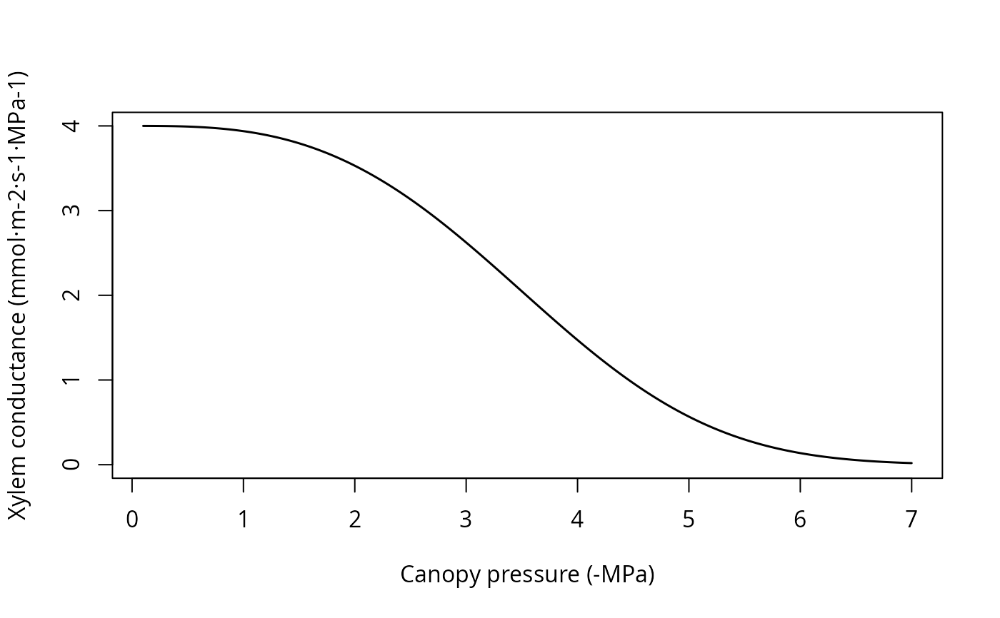

R/RcppExports.R, R/hydraulics_supplyFunctionPlot.R
hydraulics_supplyfunctions.RdSet of functions used in the implementation of hydraulic supply functions (Sperry and Love 2015).
hydraulics_EXylem(
psiPlant,
psiUpstream,
kxylemmax,
c,
d,
allowNegativeFlux = TRUE,
psiCav = 0
)
hydraulics_E2psiXylem(E, psiUpstream, kxylemmax, c, d, psiCav = 0)
hydraulics_E2psiXylemUp(E, psiDownstream, kxylemmax, c, d, psiCav = 0)
hydraulics_EVanGenuchten(psiRhizo, psiSoil, krhizomax, n, alpha, l = 0.5)
hydraulics_ECrit(psiUpstream, kxylemmax, c, d, pCrit = 0.001)
hydraulics_ECapacitance(
psi,
psiPrev,
PLCprev,
V,
fapo,
c,
d,
pi0,
eps,
timestep
)
hydraulics_E2psiVanGenuchten(
E,
psiSoil,
krhizomax,
n,
alpha,
psiStep = -1e-04,
psiMax = -10
)
hydraulics_E2psiTwoElements(
E,
psiSoil,
krhizomax,
kxylemmax,
n,
alpha,
c,
d,
psiCav = 0,
psiStep = -1e-04,
psiMax = -10
)
hydraulics_E2psiBelowground(
E,
hydraulicNetwork,
psiIni = as.numeric(c(0)),
ntrial = 10L,
psiTol = 1e-04,
ETol = 1e-04
)
hydraulics_E2psiAboveground(E, psiRootCrown, hydraulicNetwork)
hydraulics_E2psiFineRootLeaf(E, psiFineRoot, hydraulicNetwork)
hydraulics_E2psiNetworkStem1(
E,
hydraulicNetwork,
psiIni = as.numeric(c(0)),
ntrial = 10L,
psiTol = 1e-04,
ETol = 1e-04
)
hydraulics_E2psiNetwork(
E,
hydraulicNetwork,
psiIni = as.numeric(c(0)),
ntrial = 10L,
psiTol = 1e-04,
ETol = 1e-04
)
hydraulics_supplyFunctionOneXylem(
psiSoil,
v,
kstemmax,
stemc,
stemd,
psiCav = 0,
maxNsteps = 200L,
dE = 0.01
)
hydraulics_supplyFunctionTwoElements(
Emax,
psiSoil,
krhizomax,
kxylemmax,
n,
alpha,
c,
d,
psiCav = 0,
dE = 0.1,
psiMax = -10
)
hydraulics_supplyFunctionThreeElements(
Emax,
psiSoil,
krhizomax,
kxylemmax,
kleafmax,
n,
alpha,
stemc,
stemd,
leafc,
leafd,
psiCav = 0,
dE = 0.1,
psiMax = -10
)
hydraulics_supplyFunctionBelowground(
hydraulicNetwork,
minFlow = 0,
maxNsteps = 400L,
ntrial = 10L,
psiTol = 1e-04,
ETol = 1e-04,
pCrit = 0.001
)
hydraulics_supplyFunctionAboveground(
Erootcrown,
psiRootCrown,
hydraulicNetwork
)
hydraulics_supplyFunctionFineRootLeaf(
psiFineRoot,
hydraulicNetwork,
minFlow = 0,
maxNsteps = 400L,
ETol = 1e-04,
pCrit = 0.001
)
hydraulics_supplyFunctionNetworkStem1(
hydraulicNetwork,
minFlow = 0,
maxNsteps = 400L,
ntrial = 200L,
psiTol = 1e-04,
ETol = 1e-04,
pCrit = 0.001
)
hydraulics_supplyFunctionNetwork(
hydraulicNetwork,
minFlow = 0,
maxNsteps = 400L,
ntrial = 200L,
psiTol = 1e-04,
ETol = 1e-04,
pCrit = 0.001
)
hydraulics_regulatedPsiXylem(E, psiUpstream, kxylemmax, c, d, psiStep = -0.01)
hydraulics_regulatedPsiTwoElements(
Emax,
psiSoil,
krhizomax,
kxylemmax,
n,
alpha,
c,
d,
dE = 0.1,
psiMax = -10
)
hydraulics_supplyFunctionPlot(
x,
draw = TRUE,
type = "E",
speciesNames = FALSE,
ylim = NULL
)Plant water potential (in MPa).
Water potential upstream (in MPa). In a one-component model corresponds to soil potential. In a two-component model corresponds to the potential inside the roots.
Maximum xylem hydraulic conductance (defined as flow per leaf surface unit and per pressure drop).
Parameters of the Weibull function (generic xylem vulnerability curve).
A boolean to indicate wether negative flux (i.e. from plant to soil) is allowed.
Minimum water potential (in MPa) experienced (for irreversible cavitation).
Flow per surface unit.
Water potential upstream (in MPa).
Soil water potential (in MPa) in the rhizosphere (root surface).
Soil water potential (in MPa). A scalar or a vector depending on the function.
Maximum rhizosphere hydraulic conductance (defined as flow per leaf surface unit and per pressure drop).
Parameters of the Van Genuchten function (rhizosphere vulnerability curve).
Critical water potential (in MPa).
Water potential (in MPa).
Water potential (in MPa) in the previous time step.
Previous proportion of loss conductance [0-1].
Capacity of the compartment per leaf area (in L/m2).
Apoplastic fraction (proportion) in the segment.
Full turgor osmotic potential (MPa).
Bulk modulus of elasticity (MPa).
Time step in seconds.
Water potential precision (in MPa).
Minimum (maximum in absolute value) water potential to be considered (in MPa).
List with the hydraulic characteristics of nodes in the hydraulic network.
Vector of initial water potential values (in MPa).
Maximum number of steps in Newton-Raphson optimization.
Precision for water potential estimates (in MPa).
Precision for water flow per surface unit.
Soil water potential (in MPa) at the root crown.
Water potential (in MPa) inside fine roots.
Proportion of fine roots within each soil layer.
Maximum stem xylem hydraulic conductance (defined as flow per leaf surface unit and per pressure drop).
Parameters of the Weibull function for stems (stem xylem vulnerability curve).
Maximum number of steps in the construction of supply functions.
Increment of flow per surface unit.
Maximum flow per surface unit.
Maximum leaf hydraulic conductance (defined as flow per leaf surface unit and per pressure drop).
Parameters of the Weibull function for leaves (leaf vulnerability curve).
Minimum flow in supply function.
Flow per surface unit at the root crown.
An object of class spwbInput.
A flag to indicate whether the supply function should be drawn or just returned.
Plot type for hydraulics_supplyFunctionPlot, either "E",
"ERhizo", "StemPsi", "RootPsi" or "dEdP").
A flag to indicate the use of species names instead of cohort names in plots.
Graphical parameter to override function defaults.
Values returned for each function are:
hydraulics_E2psiXylem: The plant (leaf) water potential (in MPa) corresponding to the input flow, according to the xylem supply function and given an upstream (soil or root) water potential.
hydraulics_E2psiVanGenuchten: The root water potential (in MPa) corresponding to the input flow, according to the rhizosphere supply function and given a soil water potential.
hydraulics_E2psiTwoElements: The plant (leaf) water potential (in MPa) corresponding to the input flow, according to the rhizosphere and plant supply functions and given an input soil water potential.
hydraulics_E2psiNetwork: The rhizosphere, root crown and plant (leaf water potential (in MPa) corresponding to the input flow, according to the vulnerability curves of rhizosphere, root and stem elements in a network.
hydraulics_Ecrit: The critical flow according to the xylem supply function and given an input soil water potential.
hydraulics_EVanGenuchten: The flow (integral of the vulnerability curve) according to the rhizosphere supply function and given an input drop in water potential (soil and rhizosphere).
hydraulics_EXylem: The flow (integral of the vulnerability curve) according to the xylem supply function and given an input drop in water potential (rhizosphere and plant).
hydraulics_supplyFunctionOneXylem, hydraulics_supplyFunctionTwoElements and
hydraulics_supplyFunctionNetwork: A list with different numeric vectors with information of the two-element supply function:
E: Flow values (supply values).
FittedE: Fitted flow values (for hydraulics_supplyFunctionTwoElements).
Elayers: Flow values across the roots of each soil layer (only for hydraulics_supplyFunctionNetwork).
PsiRhizo: Water potential values at the root surface (only for hydraulics_supplyFunctionNetwork).
PsiRoot: Water potential values inside the root crown (not for hydraulics_supplyFunctionOneXylem).
PsiPlant: Water potential values at the canopy (leaf).
dEdP: Derivatives of the supply function.
hydraulics_supplyFunctionPlot: If draw = FALSE a list with the result of calling hydraulics_supplyFunctionNetwork for each cohort.
hydraulics_regulatedPsiXylem: Plant water potential after regulation (one-element loss function) given an input water potential.
hydraulics_regulatedPsiTwoElements: Plant water potential after regulation (two-element loss function) given an input soil water potential.
Function hydraulics_supplyFunctionPlot draws a plot of the supply function for the given soil object and network properties of each plant cohort in x. Function hydraulics_vulnerabilityCurvePlot draws a plot of the vulnerability curves for the given soil object and network properties of each plant cohort in x.
Sperry, J. S., F. R. Adler, G. S. Campbell, and J. P. Comstock. 1998. Limitation of plant water use by rhizosphere and xylem conductance: results from a model. Plant, Cell and Environment 21:347–359.
Sperry, J. S., and D. M. Love. 2015. What plant hydraulics can tell us about responses to climate-change droughts. New Phytologist 207:14–27.
kstemmax = 4 # in mmol·m-2·s-1·MPa-1
stemc = 3
stemd = -4 # in MPa
psiVec = seq(-0.1, -7.0, by =-0.01)
#Vulnerability curve
kstem = unlist(lapply(psiVec, hydraulics_xylemConductance, kstemmax, stemc, stemd))
plot(-psiVec, kstem, type="l",ylab="Xylem conductance (mmol·m-2·s-1·MPa-1)",
xlab="Canopy pressure (-MPa)", lwd=1.5,ylim=c(0,kstemmax))
